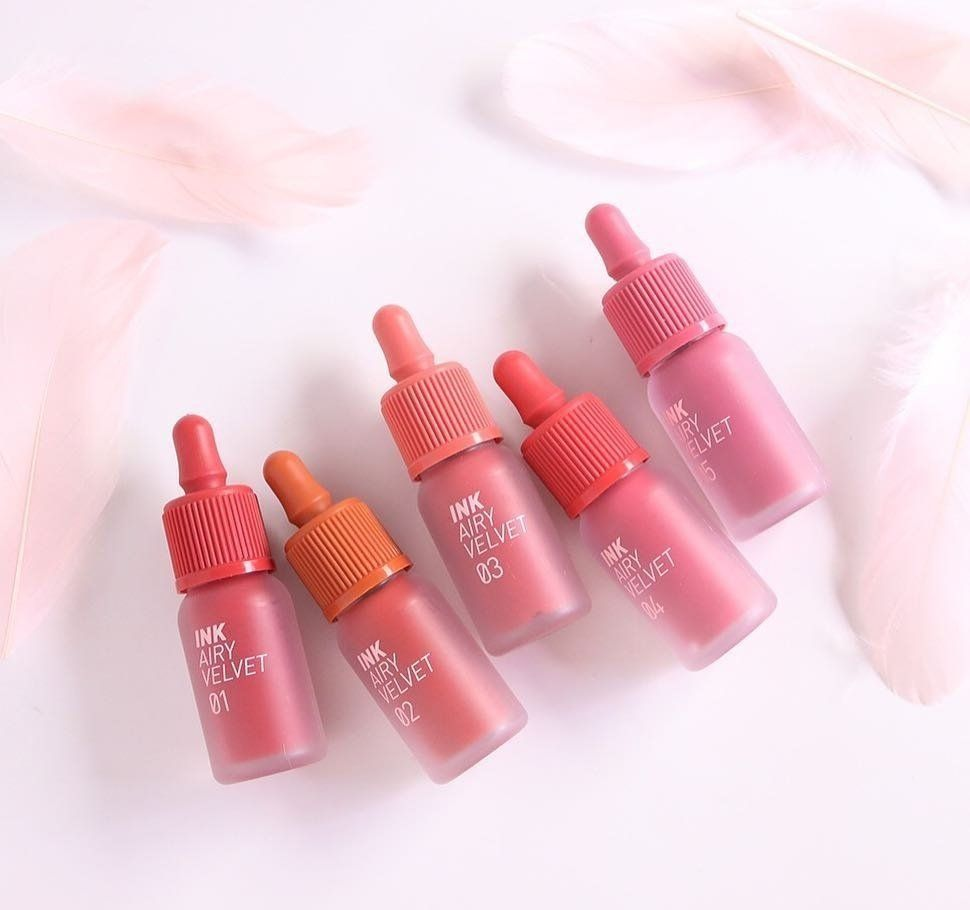
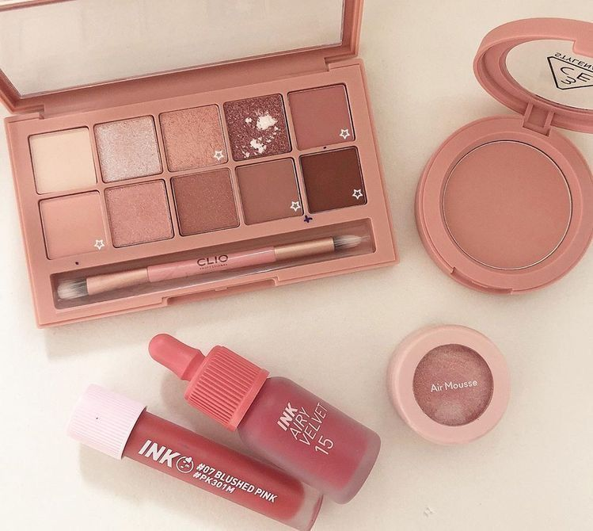

También conocido como K-Beauty, ha ganado popularidad en todo el mundo por su enfoque fresco y natural.Se caracteriza por resaltar la belleza natural de la piel y crear un aspecto radiante y juvenil
El cuidado de la piel coreano es un auténtico arte que ha revolucionado la industria de la belleza. Su enfoque se centra en lograr una piel radiante, saludable y de aspecto juvenil.

También conocido como K-Beauty, ha ganado popularidad en todo el mundo por su enfoque fresco y natural.Se caracteriza por resaltar la belleza natural de la piel y crear un aspecto radiante y juvenil
¿A que alguna vez has oído hablar del maquillaje coreano? Pues bien, el hecho de que haya llegado a tus oídos no es casual. La realidad es que cada vez un mayor número de mujeres (desde influencers de moda a actrices, pasando por modelos) apuesta por este conjunto de técnicas que provienen de Corea. Las razones son muchas, y vamos a tratar de exponértelas. Además, te daremos unos cuantos trucos para que tú misma puedas sumarte a esta nueva tendencia de belleza.
El maquillaje asiático en general y la cosmética coreana en particular son, como te hemos dicho, una tendencia cada vez más popular en Occidente. Se pretende seguir las directrices propias de las mujeres de aquella región asiática, con tal de imitar sus resultados. La razón principal es, en realidad, muy clara: con este estilo de maquillaje se alcanza un resultado discreto y natural.